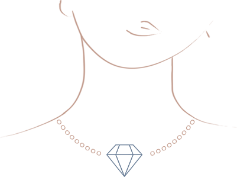
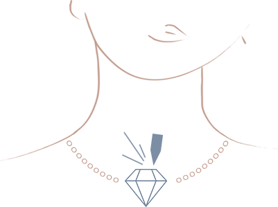
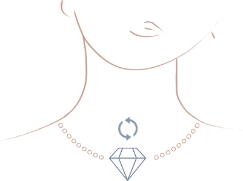

Nasza pracownia wykonuję biżuterie na specjalne, indywidualne zamówienia klientów. Poza szeroką gamą wzorów, które posiadamy, tworzymy takżę biżuterię na specjalnie zamówienie. Przyjdź do nas z własnym gotowym wzorem lub pomysłem a my na podstawie tego stworzymy Twój wymarzony produkt!

Oferujemy grawerowanie od napisów tradycyjną ręczną metodą aż po leserowo nanoszone zdjęcia na metal. Oprócz szeroko rozumianego grawerunku metali wykonujemy tabliczki z dedykacjami zamieszczone na figurach lub drewnianych obrazach. Doświadczenie w grawerowaniu złotych, srebrnych czy stalowych zegarków pozwala nam przerabiać materiały nie niszcząc i nie zacierając firmowych napisów.

Posiadasz zniszczony pierścionek, łańcuszek lub starą, antyczną biżuterię? Przynieś ją do nas! Zajmujemy się naprawą wszelakiej biżuterii złotej i srebrnej. Od naprawy mechanicznie uszkodzonych rzeczy aż po renowację i rekonstrukcję.